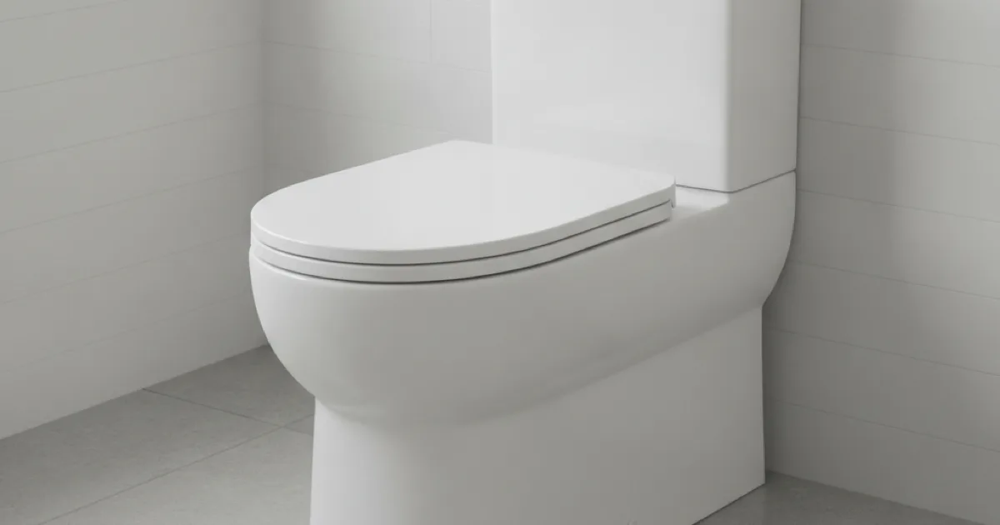
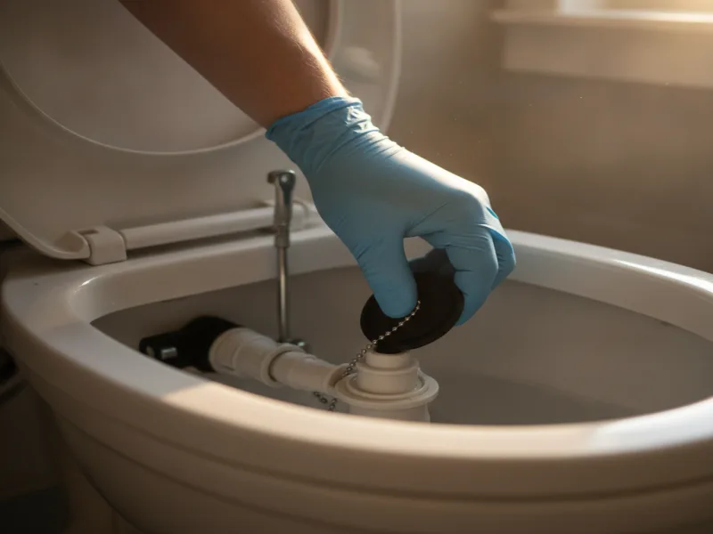

Toilet Repair in Armonk, NY
A running, leaking, or clogged toilet isn't just annoying — it can waste real money on your water bill. We find the actual cause before recommending a fix.
- Licensed & Insured
- Same-Day Service Available
- Upfront Pricing
- Clean, Respectful Technicians

Signs your toilet needs repair
The most common complaint we hear is a toilet that keeps running long after the tank should have shut off. If you can hear water trickling into the bowl or tank ten minutes after a flush, that's water — and money — going down the drain around the clock.
Other signs include a bowl that clogs often even with normal use, water pooling around the base of the toilet after flushing, a wobble when you sit down, or a flush that sounds weak and takes two or three tries to actually clear the bowl.
What causes these problems
A running toilet almost always comes down to the internal tank parts — the flapper, fill valve, or flush valve — wearing out or falling out of adjustment. These parts are made of rubber and plastic that degrade over years of constant use, and it's a very normal thing to need replacing.
We see this especially often in Armonk homes that still have their original toilets from the 1970s and 80s. Those units used a lot more water per flush than anything sold today, and their internal components are decades past their intended lifespan. A wobble or leak at the base usually points to a worn wax ring seal or loose closet bolts, which lets water escape onto the floor instead of down the drain.
What to check before calling a plumber
Before you call, it's worth a quick look at the water shutoff valve behind the toilet to confirm it's fully open, and checking that the tank lid is seated correctly — sometimes a running sound is just the fill tube sitting slightly out of place. If the toilet is clogged, one careful plunge is reasonable to try.
What we'd steer you away from is repeated plunging that doesn't clear anything, or pouring chemical drain treatments into the bowl, which can damage the porcelain and internal seals without solving the underlying problem.
Our toilet repair process
We start by actually watching the toilet run through a flush cycle, since that tells us more than a description ever could. From there we check the flapper seal, fill valve, and flush valve, and inspect the wax ring and closet bolts if there's any sign of a leak at the base.

Once we know the real cause, we explain what we found and what it'll cost to fix before doing any work. Most internal tank repairs are quick, same-visit fixes. If the toilet itself is old enough that installing a new toilet instead of repairing the old one makes more financial sense, we'll tell you that plainly instead of nickel-and-diming a unit that's reached the end of its useful life.
When to call a professional
Call us if the toilet is leaking at the base, if it's rocking or unstable when you sit down, or if a running toilet doesn't stop after you've jiggled the handle or checked the flapper yourself. Any of these can mean water damage to your subfloor if they sit unaddressed.
It's also worth having us take a look if you're not sure whether repair or replacement makes more sense — especially with an original 1970s or 80s toilet, where a full plumbing inspection for older fixtures can catch other aging parts nearby before they become separate problems. A running toilet wastes a genuinely surprising amount of water over a year, and the EPA's WaterSense Fix a Leak Week program has good background on just how much a small leak adds up to.
See our other plumbing services for Armonk homes if you're dealing with more than one issue at once.
Frequently asked questions
Why does my toilet keep running after I flush?
Usually it's a worn flapper or a fill valve that isn't shutting off completely. Both are inexpensive, common repairs that we can often fix in the same visit.
Is it normal for older toilets to need more repairs?
Yes. A lot of Armonk homes still have their original toilets from the 1970s or 80s, and the internal rubber and plastic parts simply wear out over decades of use.
My toilet is leaking at the base — is that serious?
It can be. A leak at the base often means the wax ring seal has failed, which can lead to water damage to the subfloor if it isn't addressed. It's worth having us look at it soon.
Should I repair my old toilet or just replace it?
It depends on the toilet's age and what's actually wrong. If it's original to the house and needs more than a simple part swap, replacement is often the better value. We'll tell you honestly which makes more sense.
Do you offer same-day toilet repair?
In most cases, yes. Toilet repairs are quick, common jobs, and we prioritize same-day appointments whenever we can.
Can a running toilet really affect my water bill?
Yes, more than most people expect. A toilet that runs constantly can waste a significant amount of water every single day it goes unfixed.